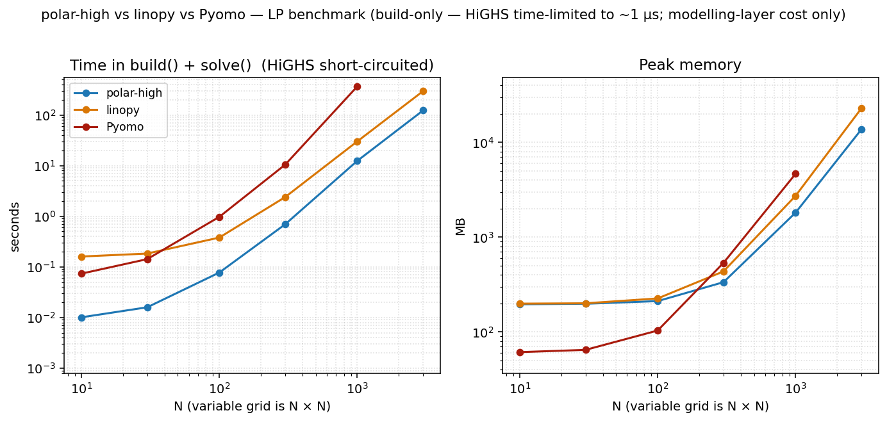
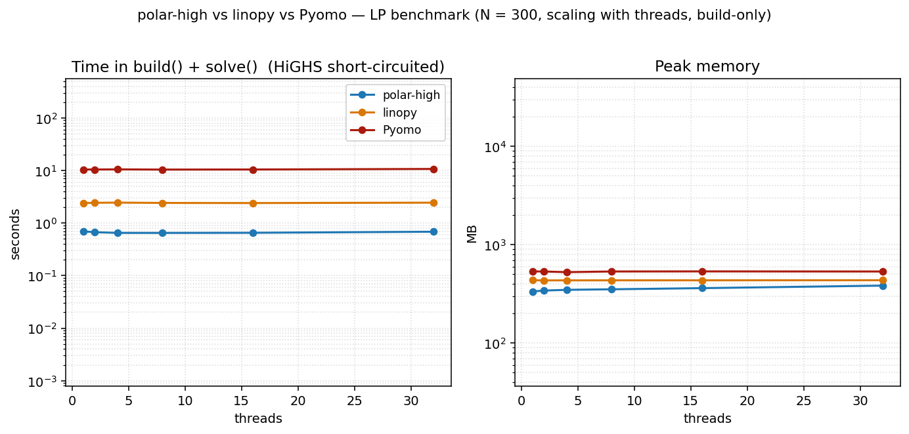
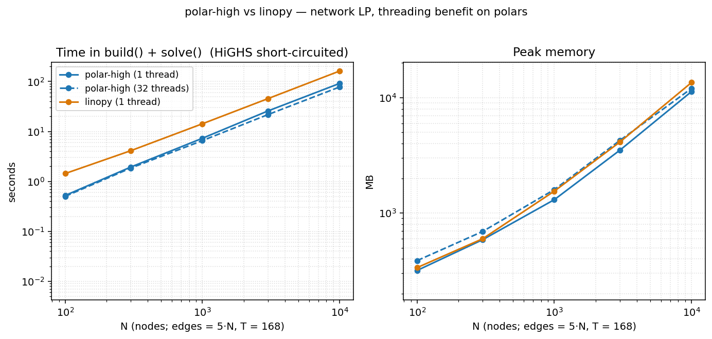
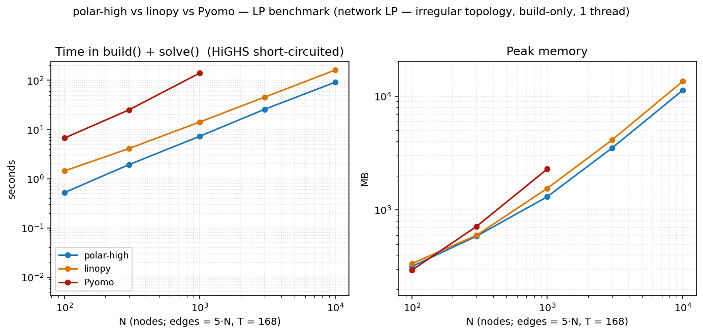
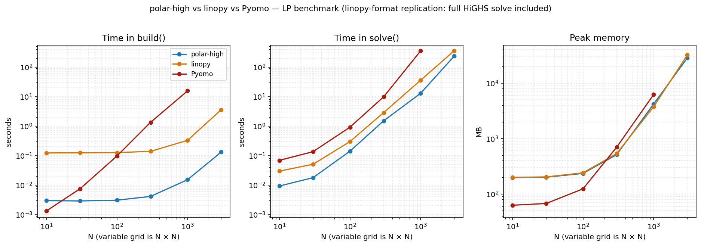

Benchmark¶
Reproducible build / solve / memory comparison between polar-high, linopy, and Pyomo on indexed linear programs, all using HiGHS as the solver. The dense-LP test follows linopy's benchmark, restricted to the linear case so polar-high can run it directly.
The benchmark is a manual artefact, not a CI workflow; runner
variability would make CI numbers misleading. The model code, runner,
and plot script live under
benchmark/
so anyone can re-run on their own hardware in a few minutes.
Headline — dense LP, build-only, single-thread¶

Two panels: total time = build() + solve(), and peak memory.
HiGHS is time-limited to 1 µs so the column reflects pure
modelling-layer cost: what each tool spends turning Python into
something HiGHS can chew on. polar-high and linopy run at
POLARS_MAX_THREADS=1 / OMP_NUM_THREADS=1. Pyomo is
single-threaded by design.
The dense LP that drives this figure (linopy's original model, restricted to LP):
min Σ_{i,j} (2·x[i,j] + y[i,j])
s.t. x[i,j] - y[i,j] >= i for i,j ∈ {1,…,N}
x[i,j] + y[i,j] >= 0 for i,j ∈ {1,…,N}
x, y >= 0
Variables: 2·N². Constraints: 2·N². Closed-form optimum
obj = N²·(N+1), used as the cross-tool correctness anchor.
At N=3000 (an 18 M-variable LP):
| total time | peak RSS | p50 during solve | post-trim | |
|---|---|---|---|---|
| polar-high (save_memory=True) | 123 s | 13.4 GB | 10.4 GB | 5.5 GB |
| linopy (io_api="lp") | 296 s | 22.4 GB | 2.0 GB | 5.9 GB |
| Pyomo | (caps at N=1000) | 4.6 GB at N=1000 | 3.8 GB at N=1000 | 1.8 GB at N=1000 |
polar-high is roughly 2.4× faster than linopy and ~40 % lower peak RSS. The memory comparison depends on which column you read — see Measuring memory below for how to choose, and the Two modes section for the warm-restart trade-off this benchmark makes. Pyomo's per-coefficient Python overhead makes it unable to keep up past N≈1000 in our 10-minute timeout.
Two modes: regular (warm-restart) vs save_memory (one-shot)¶
polar-high supports warm starts and re-solves off the same
Problem (and via WarmProblem for incremental edits without
rebuilding the matrix). That capability requires retaining the
polars / numpy source-of-truth in memory through solve() and after
it returns, and keeping the live Highs instance with its basis
across calls. linopy and Pyomo don't retain a warm-restartable LP
source either, so for an apples-to-apples comparison this benchmark
calls
save_memory=True does two things, in order, right before the
final h.run():
- Drops polar's Python LP source. Every term-side lazy plan,
every Param frame, the caller-side column-bound / cost arrays,
and the Python-side
col_names/row_nameslists are released once HiGHS has copied them. - Disk-roundtrips HiGHS. The model is written to a temporary
MPS file, the original
Highsinstance is cleared and disposed,malloc_trim(0)is called to return glibc's freed arenas to the OS, and a freshHighsis created andreadModel'd from the file. This costs ~+90 s wall time at N=3000 dense but eliminates the allocator slackaddRowsleaves behind when fed a model incrementally — net ~5 GB lower peak in full-HiGHS-solve cells.
After return, a subsequent Problem.solve() raises a clear
RuntimeError. WarmProblem-style updates are also unavailable
(the original Highs with its basis is gone). Solution.col_names
/ row_names are empty (HiGHS still has the names internally,
reachable via Solution.highs if keep_solver=True); name-based
lookups like Solution.constraint_dual("...") won't resolve. None
of this matters for cold-start rolling-horizon loops or scenario
sweeps where each step rebuilds the Problem from scratch — that
remains the supported one-shot pattern.
In regular mode (save_memory=False, the default), polar-high
keeps the source-of-truth around so a follow-up Problem.solve()
or WarmProblem-based update can pick up where the last one left
off without rebuilding the matrix. The cost is the visible RSS
retention shown in the side-by-side table below; the gain is a
free h.run() re-solve from the previous basis.
Side-by-side at the headline cells (polar-high only):
| cell | mode | total time | peak RSS | p50 | post-trim |
|---|---|---|---|---|---|
| dense build-only N=3000 | regular | 72 s | 16.3 GB | 10.6 GB | 8.9 GB |
| dense build-only N=3000 | save_memory | 123 s | 13.4 GB | 10.4 GB | 5.5 GB |
| dense full-solve N=3000 | regular | 121 s | 38.0 GB | 18.2 GB | 9.3 GB |
| dense full-solve N=3000 | save_memory | 235 s | 27.8 GB | 12.7 GB | 5.5 GB |
| network N=10000 build-only | regular | 50 s | 12.0 GB | 6.9 GB | 7.2 GB |
| network N=10000 build-only | save_memory | 92 s | 11.0 GB | 7.0 GB | 5.4 GB |
save_memory=True is consistently slower (~1.6×–1.8×) and lower
peak (3–10 GB depending on cell). The full-solve gap is the biggest
because the disk roundtrip resets HiGHS's allocator slack, which
matters most when HiGHS is doing real work. Headline tables above
use save_memory=True so the cross-tool comparison is between
similar one-shot LP-handoff patterns (linopy uses its own file
roundtrip via io_api="lp").
Measuring memory¶
The benchmark records four memory metrics per cell. Pick the column that matches the question you're asking:
| column | what it measures | when it's the right number |
|---|---|---|
peak_rss_mb |
ru_maxrss over the whole process |
how much RAM the machine must provision so the run doesn't OOM |
rss_solve_p50_mb |
median RSS while solve() runs (sampled at 25 ms cadence by a sidecar thread) |
steady-state working set during solve, transient setup spikes washed out |
rss_solve_p95_mb |
95th percentile of the same sampler | tail of solve-time distribution; sits between p50 and peak |
rss_after_solve_trim_mb |
RSS right after gc.collect() + malloc_trim(0) once solve() returns |
what the process actually held, with glibc's freed-but-cached arenas returned to the OS |
peak_rss_mb is the unavoidable peak — at the moment of peak
consumption every allocated page is in use, so malloc_trim(0) does not
help there. Trim only helps after deallocation, exposing how much of
the apparent "still used" memory was actually freed but stuck in
glibc's per-thread arena cache. linopy is particularly heavy on
arena churn: at N=3000 it shows ~21 GB resident immediately
post-solve, dropping to ~6 GB after malloc_trim(0) — roughly 15 GB
of glibc-retained pages that aren't really "in use" but ru_maxrss
counts them anyway.
Why the memory comparison between tools depends on the column¶
- Peak RSS captures any allocator-visible high-water mark, including transient HiGHS-setup scratch. polar-high streams the matrix family by family (each family's COO / CSR intermediates are freed before the next family is built), so its peak comes in below linopy's eager materialisation.
- p50 (steady-state during solve) captures what's resident
during the bulk of HiGHS's time. Here linopy and polar-high (with
save_memory=True) are both low, because each tool serialises the LP to a temp file beforeh.run()— linopy viaio_api="lp", polar-high via the MPS roundtrip insidesave_memory. The Python-side polar residue is gone by the time HiGHS is in its hot loop, and HiGHS's internal copy is what sits resident throughh.run(). polar-high's p50 is a couple of GB above linopy's because polar-high keepsVar.framemetadata around forSolution.value()lookups, while linopy retains nothing Python-side after the LP file write. - Post-trim is roughly tied between the two columnar tools — both tools' actual working set at end-of-solve is in the 5–6 GB range at N=3000. The difference is how much allocator churn each goes through to get there.
Pyomo carries each LP coefficient as a small Python expression-tree
node (a VarData reference plus a multiplier inside a
MonomialTermExpression), roughly 100–200 bytes per coefficient
once CPython overhead is accounted for. polar-high and linopy hold
coefficients as contiguous Arrow / numpy buffers of ~16 bytes per
nonzero. At 4 M nonzeros the representation difference compounds to
the multi-GB gap that's visible against either columnar tool.
The take-away: re-run on your own hardware and look at the column that matches your operational question. Ratios between tools are what's portable across machines — absolute peak numbers shift with glibc behaviour and free-memory pressure.
Reproducing¶
git clone https://github.com/nodal-tools/polar-high.git
cd polar-high
pip install -r benchmark/requirements.txt
python benchmark/run.py # ~10 min on a laptop
python benchmark/plot.py # writes docs/assets/benchmark*.png
benchmark/run.py accepts --sizes, --tools, --threads,
--repeats, --time-limit. Each (tool, N) cell runs in a fresh
subprocess so caches and Python state don't carry over. The plot
takes the median across reps. See
benchmark/README.md
for the methodology details.
Threading: defaults and where it matters¶
polar-high sets POLARS_MAX_THREADS=1 at import. The data below
shows why.
Scaling with threads at small N¶

At a small problem size (N=300) the build is too small to amortize Rayon's coordination overhead. All three tools are essentially flat across thread counts. polars's parallelism doesn't pay; linopy and Pyomo are single-threaded by design. polar-high's peak memory rises slightly with threads (per-thread scratch buffers, ~1.5 MB per thread on this LP) without a corresponding time win.
Scaling with threads on a larger LP¶

On the network LP (irregular topology, T=168, see below), polar's threading does start paying as N grows, and grows steadily:
| N | polar 1 thread | polar 32 threads | speedup |
|---|---|---|---|
| 100 | 0.52 s | 0.50 s | 1.04× |
| 300 | 1.94 s | 1.85 s | 1.05× |
| 1 000 | 7.31 s | 6.56 s | 1.11× |
| 3 000 | 25.7 s | 21.7 s | 1.18× |
| 10 000 | 91.5 s | 77.7 s | 1.18× |
The speedup is more modest than it was with the previous benchmark
configuration because save_memory=True adds a serial step (the
MPS file write + read for the disk roundtrip) that doesn't benefit
from threading — Amdahl's law in action. At threads=32, polar's
peak RSS is ~6 % higher than at threads=1 (per-thread Rayon
scratch). The takeaway:
- Default threads=1 is the right choice for typical workloads. Faster and leaner on small/medium LPs; only modestly slower than threads=32 even at large N.
- Override to threads=N by setting
POLARS_MAX_THREADSbefore importing polar-high. Worth doing for genuinely large indexed LPs where you've checked that the polars-side build is the bottleneck.
Network LP: irregular topology¶

The dense N × N headline above is the model linopy's benchmark
uses, and it's flattering to xarray: every cell has the same shape,
indexing is rectangular, and dense numpy arrays compress the
coefficient matrix. Real indexed LPs (energy systems, supply chains)
aren't shaped that way. They have irregular topology: flow
variables on edges, balance constraints on nodes, with an edge→node
lookup that varies per node.
The network LP captures that:
N nodes, E = 5·N edges drawn at random (Hamiltonian cycle + 4·N random),
T = 168 time steps (one week of hours)
vars flow[e, t] >= 0
cstr 1 flow[e, t] <= cap[e, t] ∀ (e, t)
cstr 2 Σ_{e: dst[e]=n} flow[e,t] − Σ_{e: src[e]=n} flow[e,t]
== demand[n, t] ∀ (n, t)
obj min Σ cost[e] · flow[e, t]
The node-balance constraint requires an edge→node lookup. polar-high
expresses this as a polars join (Where(flow, edges_dst_n)); linopy
uses flow.groupby(dst_array).sum(); Pyomo precomputes
incoming[n] adjacency dicts and iterates them. Each idiom is
natural to its tool.
At N=10 000 (≈ 8.4 M variables, ≈ 10 M constraints):
| total time | peak RSS | p50 during solve | post-trim | |
|---|---|---|---|---|
| polar-high (save_memory=True) | 92 s | 11.0 GB | 7.0 GB | 5.4 GB |
| linopy (io_api="lp") | 162 s | 13.2 GB | 1.6 GB | 4.0 GB |
| Pyomo | timed out at N=3000 | — | — | — |
polar wins on time (~1.8× faster) and on peak RSS (~17 % lower than
linopy). The p50 column favours linopy because of its file-roundtrip
trick — linopy serialises the LP to a temp file and HiGHS reads it
back, so linopy's Python-side representation is gone by the time
HiGHS is in its hot loop. polar-high does an analogous MPS
roundtrip under save_memory=True but still keeps its Var.frame
metadata for Solution.value() lookups — slightly more residual
than linopy's pure file-handoff. Pyomo can't finish at this scale
inside our 10-minute timeout.
Replication: linopy's original benchmark format¶

This is the same dense LP at threads=1 in the linopy benchmark's original three-panel format: build / solve / memory shown separately, with the full HiGHS solve included (no time limit). We include it for direct visual comparison with linopy's published numbers and as the methodology footnote.
Caveat: read with care. The build() / solve() split is not
an apples-to-apples decomposition across tools. Each library draws
the boundary in a different place:
- polar-high's
build()registers metadata only. The matrix assembly happens insidesolve()alongside the HiGHS call. - linopy's
build()materialises xarray coefficient arrays eagerly;solve()writes them to an LP file and hands it to HiGHS. - Pyomo's
build()instantiatesVarData/ConstraintData/MonomialTermExpressionPython objects per coefficient. Most of the work happens here;solve()walks the expression tree to emit the LP.
So when you compare the build column between tools, you're
comparing what each tool chose to put in build(). The
apples-to-apples cross-tool measurement is build() + solve(),
which is the headline figure at the top of this page.
That said, the replication is faithful: the closed-form objective is hit exactly, the model is the same LP, and HiGHS solves the same sparse matrix. linopy's numbers reproduce within run-to-run noise.
Fairness caveats¶
- Each tool builds the LP in its own natural style; the closed-form objective (or cross-tool agreement on the network LP) confirms they're all solving the same problem.
- Pyomo's solve uses the
appsi_highspersistent-solver interface, the fastest Pyomo→HiGHS path. The file-basedSolverFactory("highs")route would inflate Pyomo's solve time with LP-write/reread overhead. - linopy uses
io_api="lp"explicitly: the configuration where ourtime_limitshort-circuit reliably reaches HiGHS for the build-only test. linopy'sio_api="direct"is faster on full solves but interacts awkwardly with the time-limit short-circuit. - polar-high's solve calls into
highspydirectly with no intermediate file in either configuration. - HiGHS itself stays at 1 thread across all tools, so the solve column remains apples-to-apples.
- Each
(tool, N)cell runs in a fresh Python process, so caches and memory don't carry over between cells. Python startup costs ~50 ms per cell, negligible at our sizes. - One machine, one Python version, one HiGHS version. Re-run on your own hardware before reading too much into the absolute numbers; the ratios between tools are what's portable.
What's not in the benchmark¶
- MIP, QP, warm starts, and Lagrangian decomposition. The benchmark deliberately exercises the matrix-assembly path on plain LPs.
- JuMP and gurobipy. Both have toolchain or licence friction
that defeats "anyone can re-run from a clean
pip install".
If you'd like a different model class (block-angular, time-coupled, mixed-integer with branching) in the benchmark, open an issue.